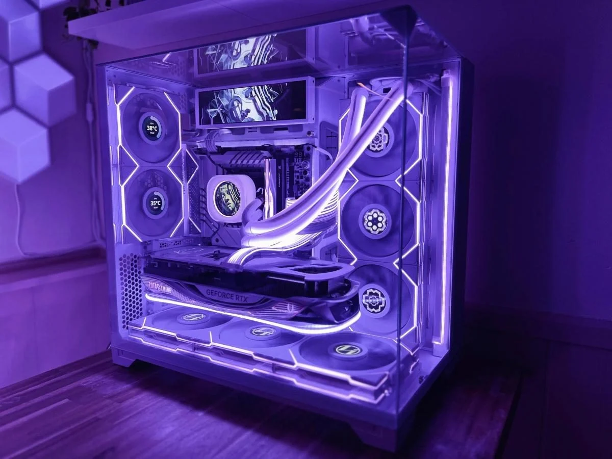
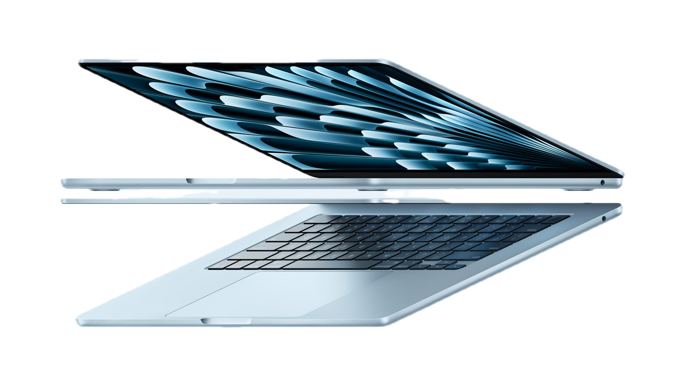
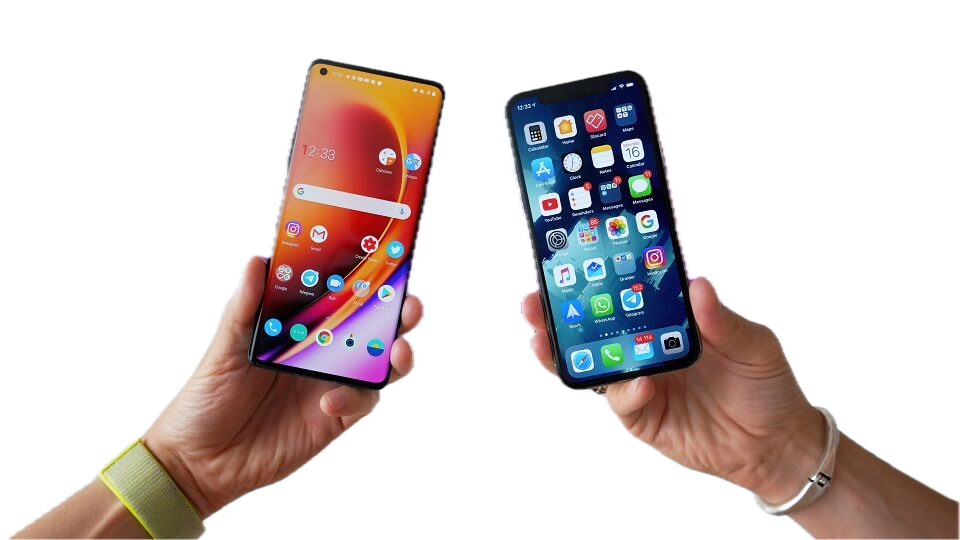
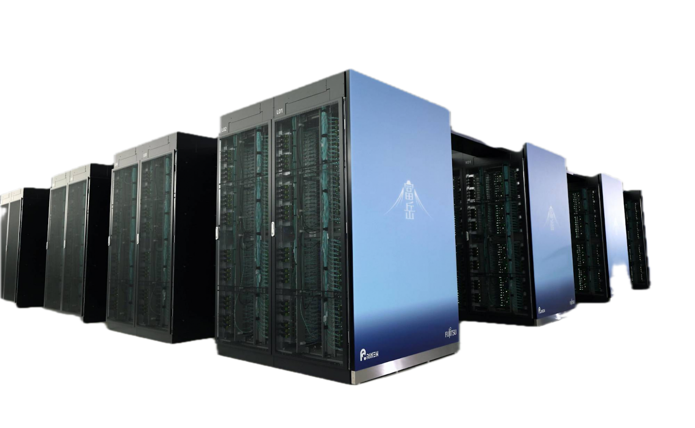
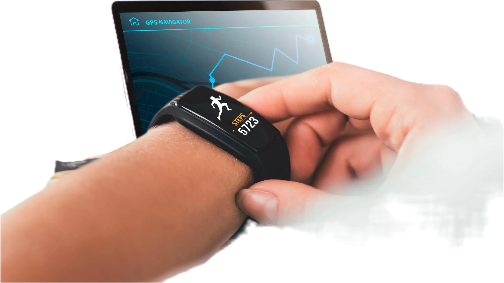
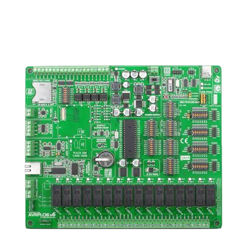

Зал 4 — Классификация современных вычислительных систем
Классификация современных вычислительных платформ по основным архитектурным и функциональным типам.
ПК

Системы индивидуального использования, предназначенные для работы одного пользователя. Класс сформировался с появлением IBM PC и массовых персональных компьютеров, включая Apple Macintosh и современные ноутбуки.
Ноутбуки

Портативные вычислительные системы, предназначенные для мобильного использования. Класс включает различные модели от легковесных до мощных рабочих станций.
Смартфоны

Компактные автономные устройства с сетевым доступом и высокой вычислительной плотностью. Класс представлен смартфонами (например, iPhone), планшетами и носимой электроникой.
Серверы
Многопользовательские вычислительные системы, предназначенные для обработки данных и сервисов. Включают серверные платформы на базе процессоров Intel Xeon и инфраструктуры крупных IT-компаний.
Суперкомпьютеры

Системы параллельной обработки данных для научных и инженерных задач. Примеры включают суперкомпьютеры уровня «Fugaku и Frontier», а также отечественные системы, такие как "Ломоносов-2".
IoT-системы

Встроенные вычислительные устройства, интегрированные в повседневные объекты. Класс включает умные дома, носимую электронику и промышленные IoT-решения.
Встроенные системы

Специализированные вычислительные устройства, интегрированные в технические системы. Класс включает микроконтроллерные платформы и одноплатные компьютеры.